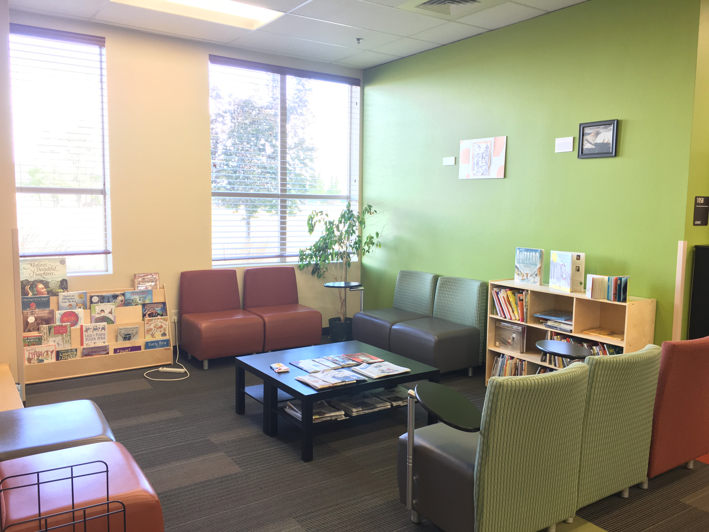
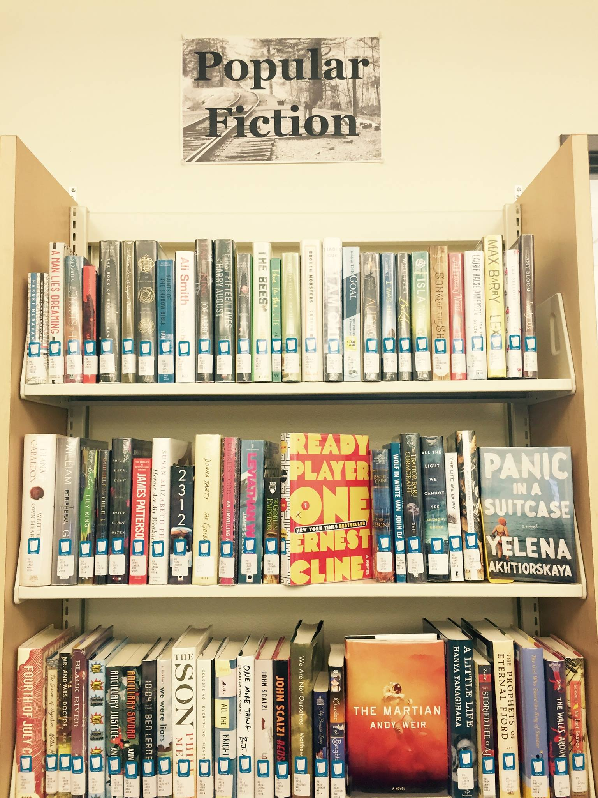
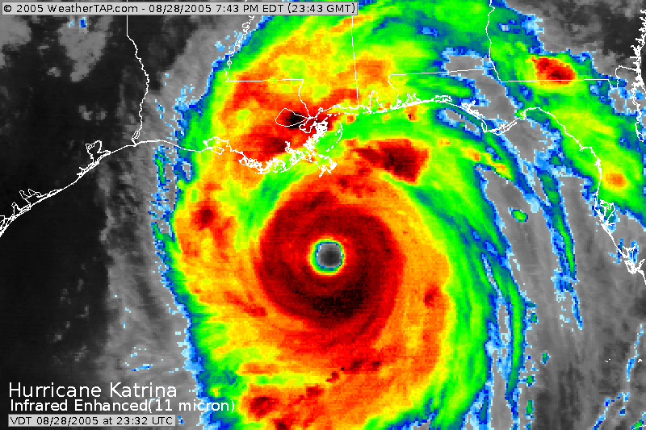
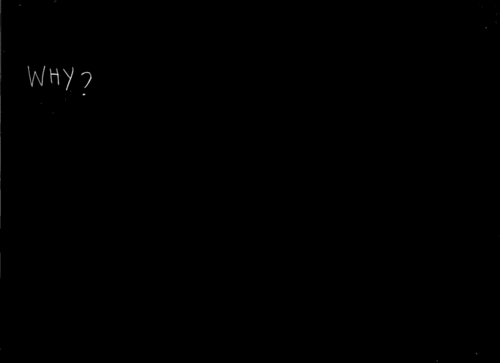
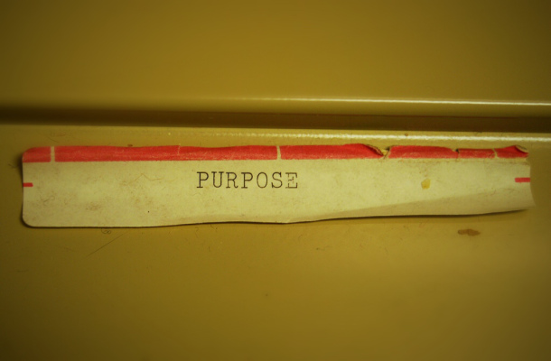

COMM 101

To follow along, load this in your browser: http://www.ryanpatrickrandall.com/talks/comm101.html
Created by Ryan P. Randall
Hello!
I'm Ryan Randall, from the library!
I'm here to help you prepare for your next assignment. And the rest of your classes, to be honest.
What have you already done in the library?
- Printing?
- Used the textbooks on reserve?
- Used one of our many computers?
- Requested an article or book?
- Used the online chat?
- Used the anatomical models?
Have your kids used the children's section?

Did you come dressed up for Halloween?
Have you used our Popular Fiction sections?

Here's some more library resources!
- Databases—including movies!
- Research Guides that help you know where to start!
- Schedule an Appointment with a Librarian—you've already paid for it!
- Book a Group Study Space—we've got four of them!
The Information Life Cycle
You know that sources aren't all the same.
So what makes sources different?
Hurricane Katrina: August 2005

What kinds of sources might discuss Hurricane Katrina?
Where do these sources go on our timeline?
By the way, SUNY Canton has a great chart on the different "Types of Information Sources".
History Doesn't Repeat, But It Echoes
Let's imagine you're researching a recent event.
- What does the information timeline say about the kinds of sources you could find?
- How could you use older sources to write about new events?
Let's watch UNLV's "Information Life Cycle" video!
Source Evaluation & the SIFT Moves
"Don't Hit Any Other Cars"
- Well-meaning advice isn't always useful. — What's a better way to help drivers learn how to drive?
- Make the SIFT moves as natural as "look over your shoulder before you change lanes!"
SIFT Moves Help You Get Context, Fast!
- Stop! — Don't waste your time reading junk.
- Investigate the Source — Try Wikipedia. Really!
- Find better coverage — Are these "facts" also in the news sections of the NY Times, the Associated Press, the Guardian, CNN, or other reputable venues?
- Trace claims, quotes, and media back to the original context — CWI Library can help you find original sources. So can Google Scholar!
Source Selection & the CRAAP Criteria
CRAAP test criteria
- Currency
- Relevance
- Authority
- Accuracy
- Purpose
Blakeslee, S. (2004). The CRAAP test.
Not a "Test"—It's Guidelines

The CRAAP criteria help you choose where to place your time & trust. There is no simple litmus test.
Currency
- When was this source published?
- The timeframe of some information is crucial.
Relevance

- Why is this right for this assignment?
- Are its approach and depth suitable for your purposes?
Authority
- Who wrote this?
- Do they have appropriate expertise on this subject?
Accuracy
- How does this source support its claims?
- Can you check where the authors got their facts & examples?
Purpose

- Why was this written?
- Is the author trying to benefit personally from this?
CRAAP test criteria
- Currency
- Relevance
- Authority
- Accuracy
- Purpose
Blakeslee, S. (2004). The CRAAP test.
COMM 101 Research Guide
Here's some great places to start!
- Gale Virtual Reference Library—it's like Wikipedia, but better
- Credo Reference—it's a jumping-off point to many library sources
- CQ Researcher—lots of jumping-off points and timelines
- Academic Search Complete—our "supercenter" database
CWI Library Databases
Even better than Google Scholar!
- Focus on disciplines taught at CWI
- Provides access to whole source
- Authoritative
How did this go? Let me know at http://bit.ly/cwilif!
Keep in touch with the CWI Library
Please schedule an appointment with a CWI Librarian if you'd like further research assistance.
You can also get help from the College of Western Idaho Libraries through our online chat, our FAQ pages, calling or texting us, and email!
Thank you for your time!
"Pulling a book off the shelf" photo by Bennington College's Crossett Library with a CC BY-NC-SA 2.0 license.
Caulfield, Mike. SIFT (The Four Moves). Retrieved from SIFT (The Four Moves).
Blakeslee, S. (2004). The CRAAP test. LOEX Quarterly, 31(3), 6-7. Retrieved from http://commons.emich.edu/loexquarterly/vol31/iss3/4.
"Purpose" photo by Seth Sawyers with a CC BY 2.0 license and given some minimal filtering by Ryan.